| Variables | Graphs |
|---|---|
| One Quantitative | histogram, density plot, … |
| One Categorical | … |
| … | … |
Graphics: Choose a Graph Type
Section Learning Outcomes
After this tutorial, you will:
- Distinguish variable types: quantitative, categorical (nominal, ordinal, interval, ratio); explanatory, response, covariate.
- Choose an appropriate graphical display for a specified combination of variables.
- (Continue to) critique statistical graphics based on design principles.
Note: You do NOT have to memorize all the information in this tutorial. Review it now, but know you will probably return to this tutorial for later reference. Your goal should be to finish with a basic idea of which graph types should be used for which variable types. Notice that the “Gallery” sections in the navigation bar are labeled by which variable types are to be shown!
At the end, you might want to finish with your own notes filling in a table like the one below:
Text Reference
- Beyond Multiple Linear Regression Ch. 1.5
- Ecological Models & Data in R Ch. 2 discusses graphics, but is not recommended as the approach to reading in data, writing R code, and generating graphs in R is very different to that used in this course.
- A comprehensive, and free, supplemental reference is Fundamentals of Data Visualization by Claus Wilke
Motivation: Imagine First!
Figures are a crucial tool for exploring your data and communicating what you learn from the data.
Whether you are doing a quick check to assess basic features of a dataset or creating a key figure for an important presentation, the best practice is to work thoughtfully. You already learned about creating graphics by I.C.E.E:
The I.C.E.E. method:
- Imagine how you want your graph to look, before you
- Code. Once you have the basic starting point,
- Evaluate your work, and
- Elaborate (refine it).
Repeat until the figure is as awesome as it needs to be.
Limiting Your Imagination
There is really no limit to the creative data visualizations you might dream up.
But there is a set of basic, workhorse graphics that statisticians and data scientists use most frequently. What are the common options and how do you choose among them?
The best choice depends on what kind of data you have, and also on what you want to do with it: what question are your trying to answer? What story will you tell?
Goals
Specifically, you will now focus on choosing the right type of visualization for the task at hand.
Note that the graphs shown in this tutorial are over-simplified versions - icons, really - with missing labels, huge titles, and huge data elements. This is intentional, to evoke the look of each plot type rather than to present actual data.
Variable Types
Before designing a graphic, you need some data. Ideally, it will be in a tidy table, with one row per case and one column per variable.
Different plots may be appropriate, depending on whether the variable is:
- Categorical (either nominal or ordinal) or
- Quantitative (interval or ratio)
- Beware categorical variables that are stored using numeric codes: they are still categorical!
- Note: Variables that take on discrete numeric values can be treated as either, depending mainly on whether there are a lot of possible values (treat like numeric) or few (treat like categorical)
- Other courses or disciplines may distinguish carefully between ordinal and nominal data. We often won’t, since we don’t learn distinct methods for them, but treat both as categorical.
The video below gives a concise explanation of the different variable types you need to be able to recognize.
DISTRIBUTIONS
Sometimes, you need a plot that lets you see the distribution of a single variable:
- What values does it take on?
- How often does each value occur?
Sometimes these graphs present the answer to a scientific question of interest, but often they are used during exploration or model assessment to better understand a dataset and:
- Check the data
- Are there lots of missing values?
- Are missing values encoded as 999 or -1000 or some other impossible value instead of being marked as “NA”?
- Verify whether the variable’s distribution matches expectations (for example, symmetry, etc.)
Gallery: One Categorical Variable
Consider your Audience
To show one categorical variable, we will mainly use bar charts. You might also consider lollipop/Cleveland dot plots, or pie graphs.
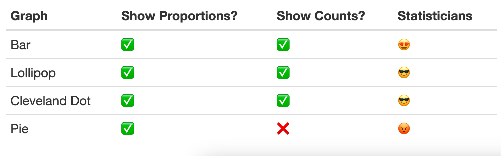
Bar Graph
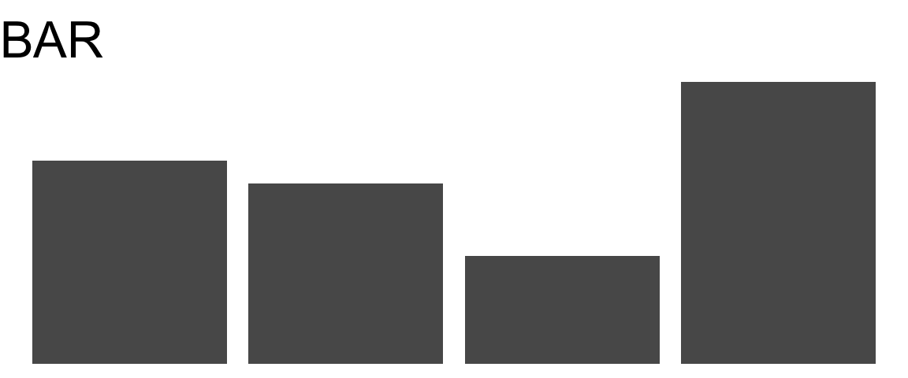
- Can show either counts, proportions, or percentages
- Easy to see which categories have more/fewer observations
Cleveland Dot Plot
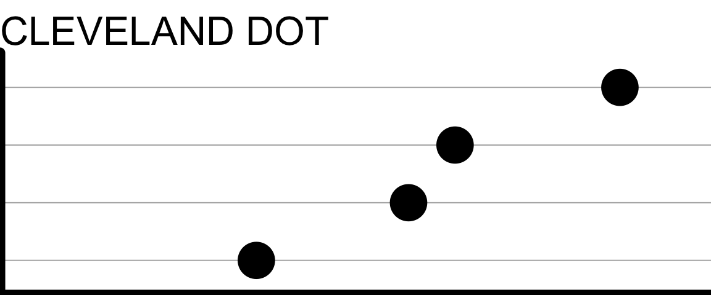
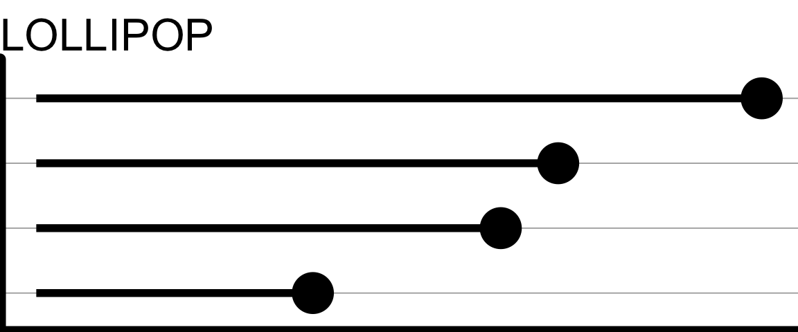
- Main difference is whether the “sticks” are drawn (Lollipop) or not (Cleveland Dot)
- Much like a bar chart, but using dots or lollipops to mark the count or proportion in each category
- Work well when there are many categories to be ranked by frequency
Pie Chart
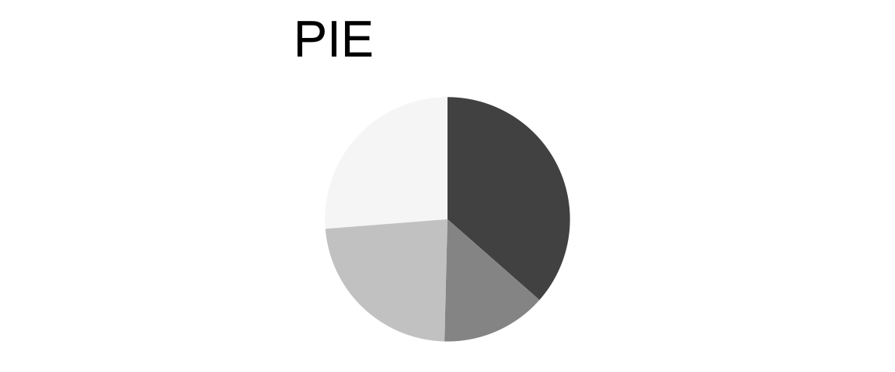
- Display proportions, not counts
- Unpopular with many statisticians and data scientists because…
- Hard to see which categories have more/fewer observation when proportions similar
- Temptation to clutter them up with annotation (for example, percentage for each slice)
- Can be inefficient use of space on rectangular page
- Often easier to interpret when there are few categories
Gallery: One Quantitative Variable
Dotplot
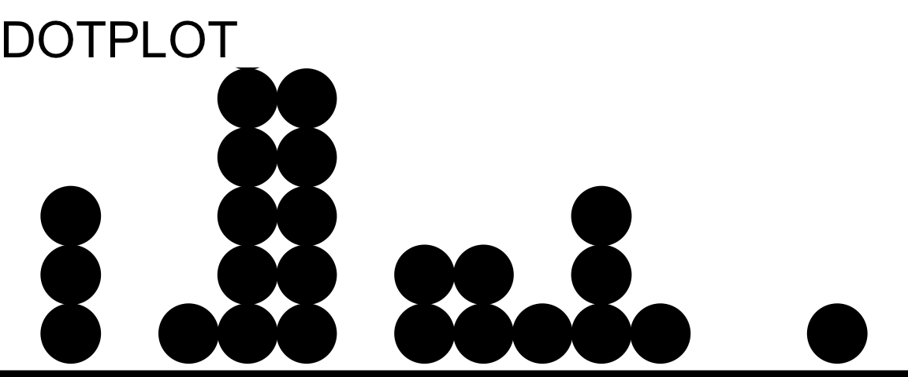
- Intuitive representation: x-axis shows range of variable values, and dots are data points
- As the idea is to show one dot per observation, may not work well for huge datasets
Histogram
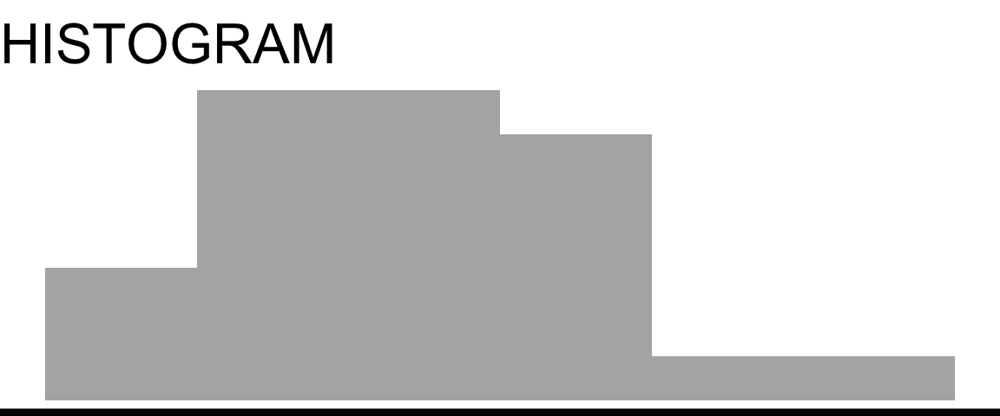
- Range of variable values is divided into bins, then height of each bar corresponds to the number of observations in the bin
- Effective way to examine the shape of a distribution
- Choosing the number of bins to use is tricky: too many, and the shape is jagged; too few over-smooths (peaks blend together). Not sure? Find a number of bins that is definitely too few, and one that is definitely too many, and then try to settle on an in-between value that best shows the real shape of the distribution without over-smoothing.
Density Plot
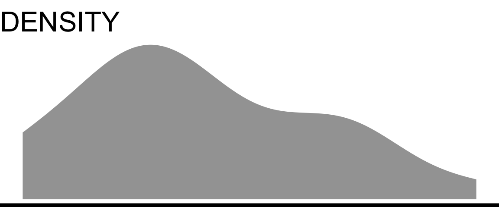
- Like a smoothed version of a histogram (obtained by kernel density estimation, if you want to look up mathematical details)
- Caution: for small datasets, the density plot may show “peaks” that really correspond to one or a few observations
- Can only show density (relative frequency of observation), not counts
QQ Plot
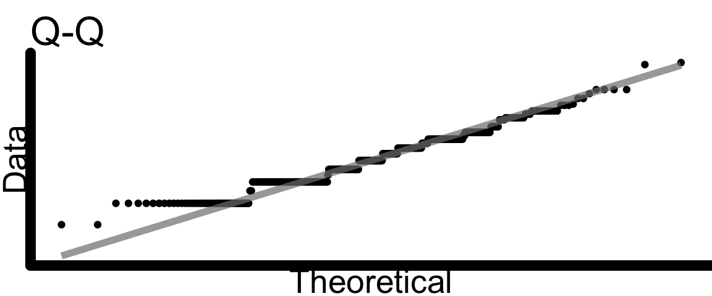
- “Q-Q Plot” is short for “Quantile-Quantile Plot”
- In some cases, we want to examine the shape of a variable’s distribution to see if it matches a theoretical expectation. For example: do the regression residuals match a normal distribution? (If that example doesn’t make sense to you now - it will later in the course, don’t worry.)
- Quantile-quantile plots are one way to make this comparison. They plot the quantiles of the data as a function of the same quantiles of the expected theoretical distribution; if there’s a good match, the points should follow a line with slope = 1.
- How close to the straight line is “close enough”? That’s the tricky part…
Check Your Understanding: One-variable plots
Which plot would work best to show the distribution of 75 families’ household incomes?
Which plot would work best to show the distribution of 75 families’ postal codes?
Lollipop plots and bar graphs work better for categorical variables – they show counts or proportions (or some other summary of counts in categories). By default, there would be one lollipop or bar for each unique value of income - what a mess! Histograms and density plots, on the other hand, show the distribution of one quantitative variable. (Scatter plots are usually used to show 2 quantitative variables.)
RELATIONSHIPS
Very often, we want to examine relationships between variables, not individual variables’ distributions. This means thinking carefully about what types of variables are in the (potential) relationship, and how we can best show their values graphically.
Gallery: 2-3 Cat.
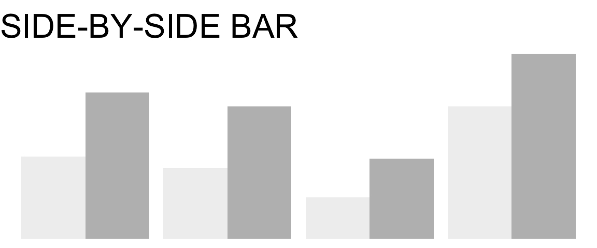
- One set of bars per “category”, colored by “groups” – shows two categorical variables at once
- Good for showing counts in each combination of categories/groups
- It is hard to compare proportion in each group across categories, if the total number in each category differs.
Stacked Bar Graph
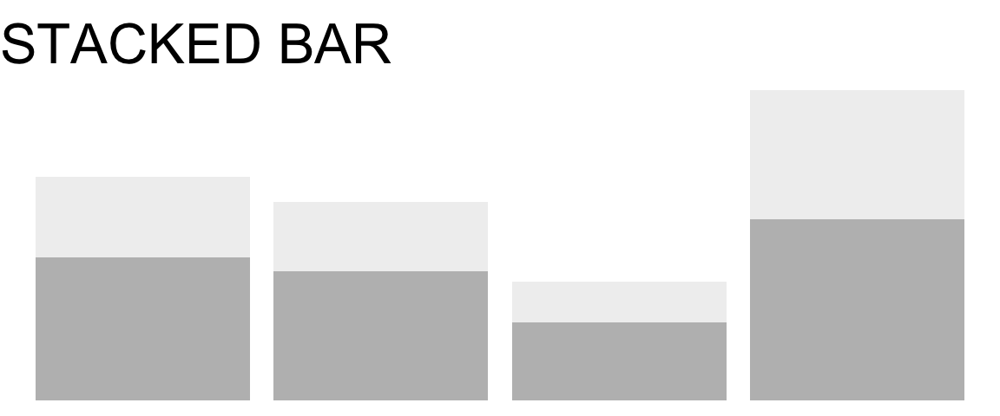
- Similar to side-by-side bar
- Compared to side-by-side, it’s harder to compare proportions in each group within a category, but easier to estimate the proportion in each category.
Faceted Bar Graph
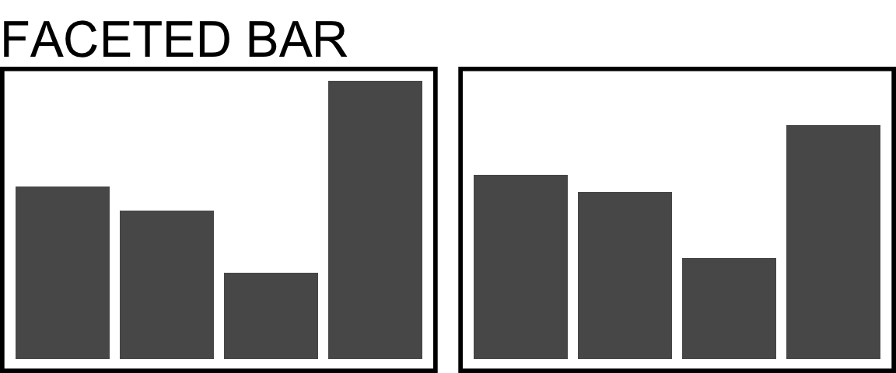
- One plot box – usually called a “panel” or “facet” – for each of a set of groups
- Think carefully about the question of interest and the relationship you want to highlight as you choose: should bar heights correspond to…
- Number of observations?
- Proportion of observations overall in the whole dataset?
- Proportion of observations in the panel?
- Something else?
Combinations (Stacked bars + Facets, etc.)
Of course, if you have 3 variables instead of just two, you can combine methods. Avoid it unless you are sure it is necessary and communicates clearly.
- Be sure that the resulting graph is not too complex to understand quickly, at a glance. Packing too much information into one graph sometimes means none of the info is actually communicated!
- And if showing proportions or percentages in such a display, be sure you understand what denominator is being used in the calculations – is it the fraction of the whole dataset, within facets, etc.?
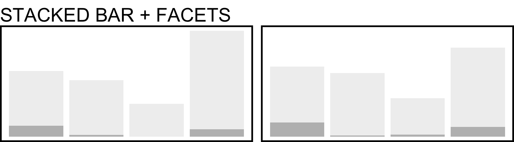
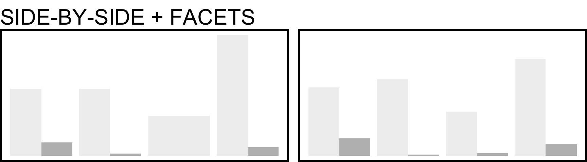
Gallery: 2-3 Quant.
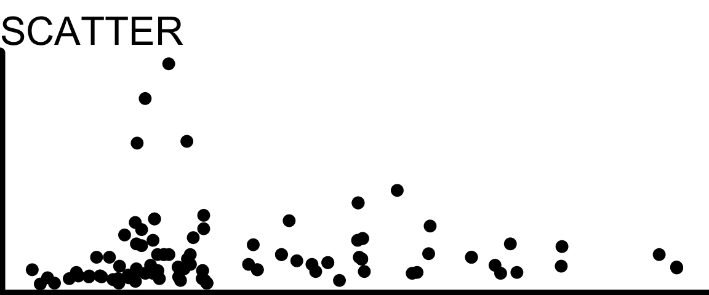
- A scatterplot is the default for visualizing the relationship between two quantitative variables
- Be sure you actually have two quantitative variables! If not, another plot may be a better option
Line Plot
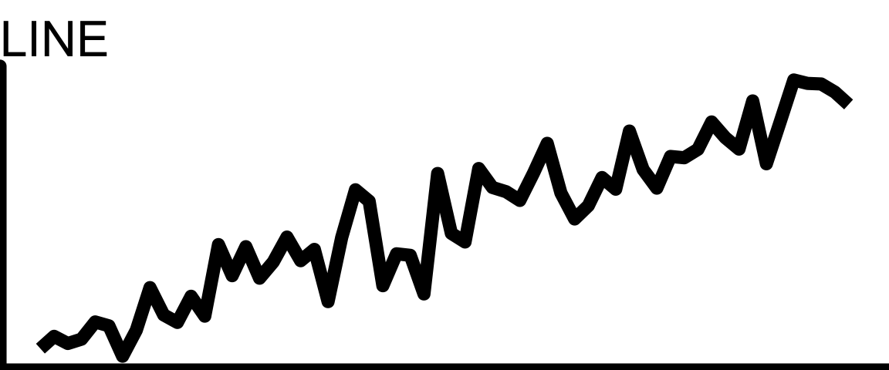
- If the x-axis variable is Time (or it otherwise makes sense to join the dots), a line can replace the dots, or be added to them
- Make sure connecting the dots makes sense in context and does not guide the eye to incorrect interpretations (for example, emphasizing outliers)
Adding More Quant. Variables
What if you have three or four quantitative variables whose relationships you’re curious about?
Proceed with caution!
It’s possible to include 3+ variables on one plot, but ideally it should still be interpretable at a glance:
- What is the main point of the figure? Is it possible to make the point without showing all 3+ variables together?
- Keep things as simple as you can while still telling the story you want to tell.
Scatter + Size
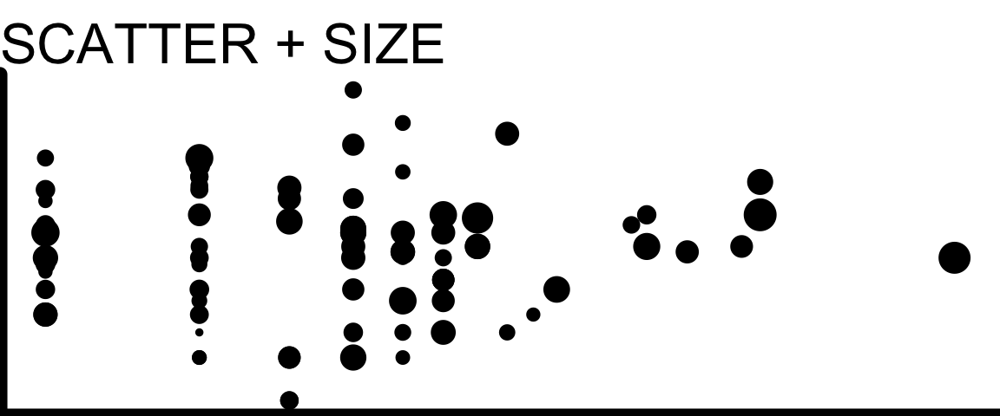
- You can adjust the size of each dot in a scatter plot to correspond to the value of a third variable
- This is especially useful when the third variable measures the size of the population being represented – for example, a scatter plot of life expectancy vs income for many countries, with point size indicating population of each country
Gallery: Mixed Quant. + Cat.
There are several plots designed specifically to look at the distribution of a quantitative variable, grouped by a categorical variable.
Boxplots
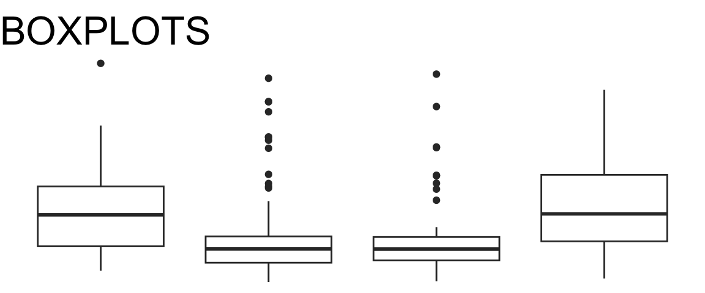
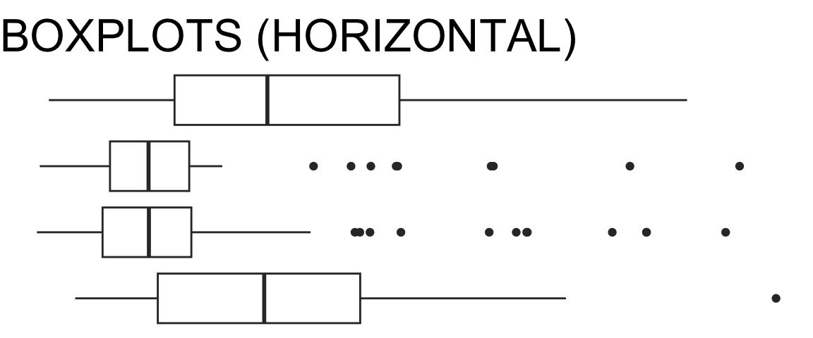
- The boxplot shows a summary of the distribution. The box spans the middle half of the data, with the line marking the median. The “whisker” lines extend to cover the range of “most of” the data, with outliers shown individually
- For details, check out this optional explanation of how boxplots are constructed from Introduction to Modern Statistics by Mine Çetinkaya-Rundel and Johanna Hardin.
- If your dataset is too small to estimate the median and quartiles of the data accurately, consider showing all the observations (for example, using or overlaying a jitter plot)
Violin Plots
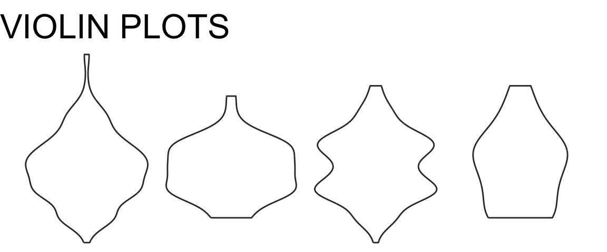
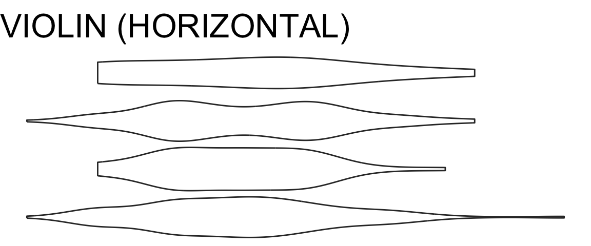
- These show a mirrored density plot for each group
- As for density plots, make sure you have a large enough dataset so that the bumps in the density curve don’t represent just one or a couple of observations
Jitter Plots
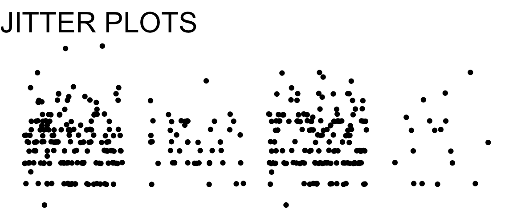
- These show all the points in every category, “jittered” (moved slightly away from the category axis) to reduce overplotting
- If the dataset is too large, overplotting may still be a big problem
- Jitter plots are often used as an additional layer on top of boxplots or violin plots to make the size of the dataset, and the locations of individual datapoints, more visible
Sina Plots
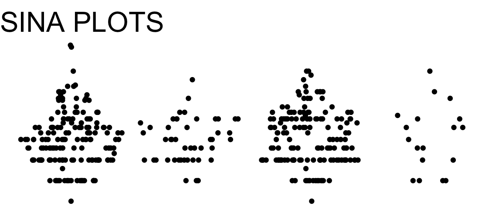
- These show all the points in every category, arranged so that the width of the point cloud corresponds to the density of observations
- If the dataset is too large, overplotting may become an issue
- A sina plot is a bit of a hybrid between a violin plot and a jitter plot; or, a more organized, less random version of a jitter plot.
Facets?
You can also consider making multi-panel plots with one histogram, density plot, or dotplot per facet, but comparing between facets is usually harder than comparing boxplots or violin plots on a single axis.
Check Your Understanding: Quant. + Cat.
There are some errors and inconsistencies in the chart below!